ABOUT US
番谷石材店について
これまで、施工させていただいたお客様からのご紹介をきっかけに、ご相談をいただいてきました。
こちらからしつこく勧誘したり、突然ご自宅へ伺ったりすることはありません。お墓や石のことで分からないことがあれば、まずはお話をお聞かせください。
私たちについて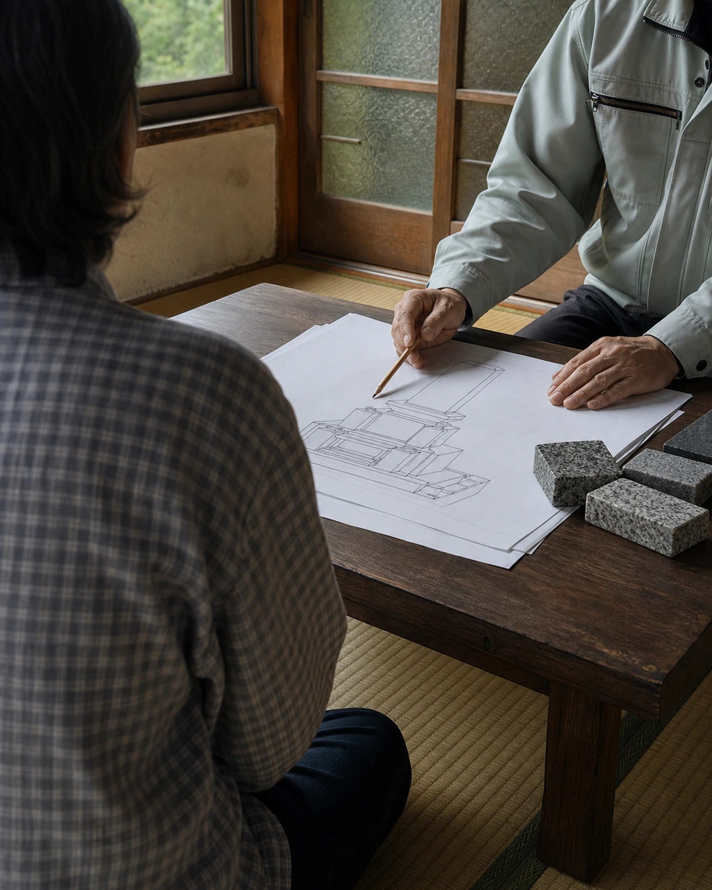
WHAT WE CAN DO
番谷石材店でできること
お墓と石に関することを、幅広くご相談いただけます。
お墓の建立
リフォーム・修理
クリーニング
追加彫り
墓じまい
墓地のご案内
表札・庭石
ペットのお墓
内容がはっきり決まっていない段階でも大丈夫です。
今の状況を伺いながら、必要なことを一緒に整理していきます。
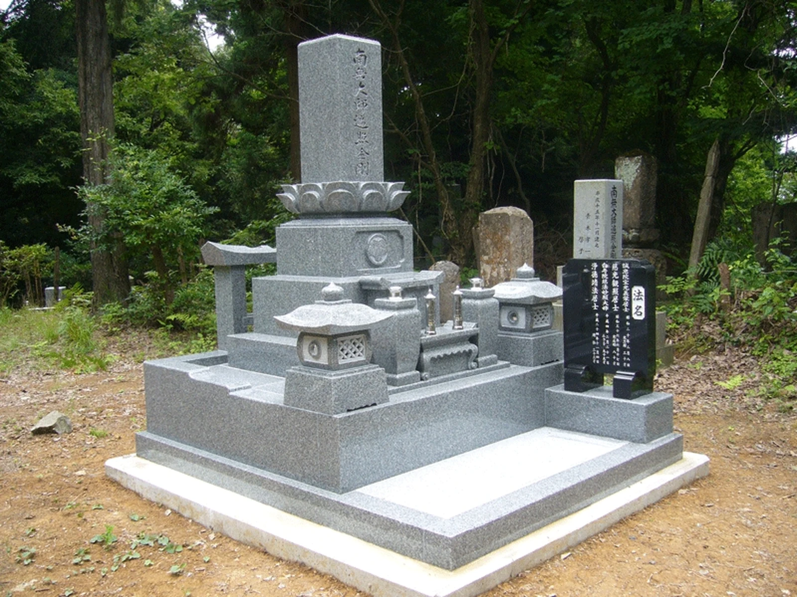
BUILD A GRAVE
お墓を建てる
新しくお墓を建てる方へ。
お墓の形、石の種類、墓地の場所、ご予算など、お墓づくりで考えることはたくさんあります。
番谷石材店では、見た目だけでなく、基礎や納骨部分など、長く安心してお参りできるための内部構造も大切にしています。
お墓を建てるページへ→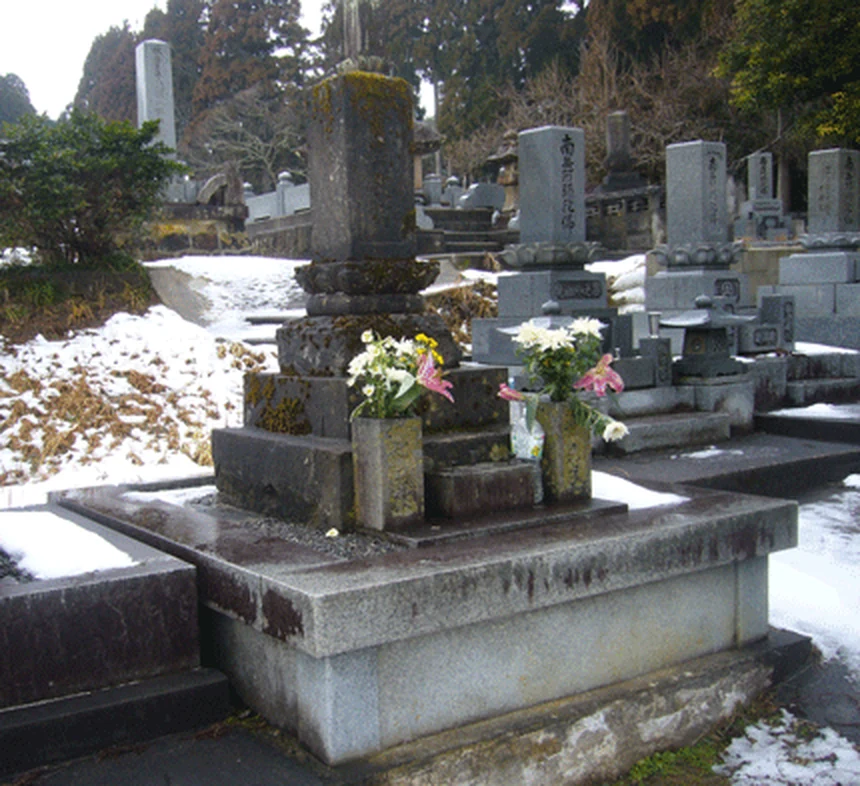
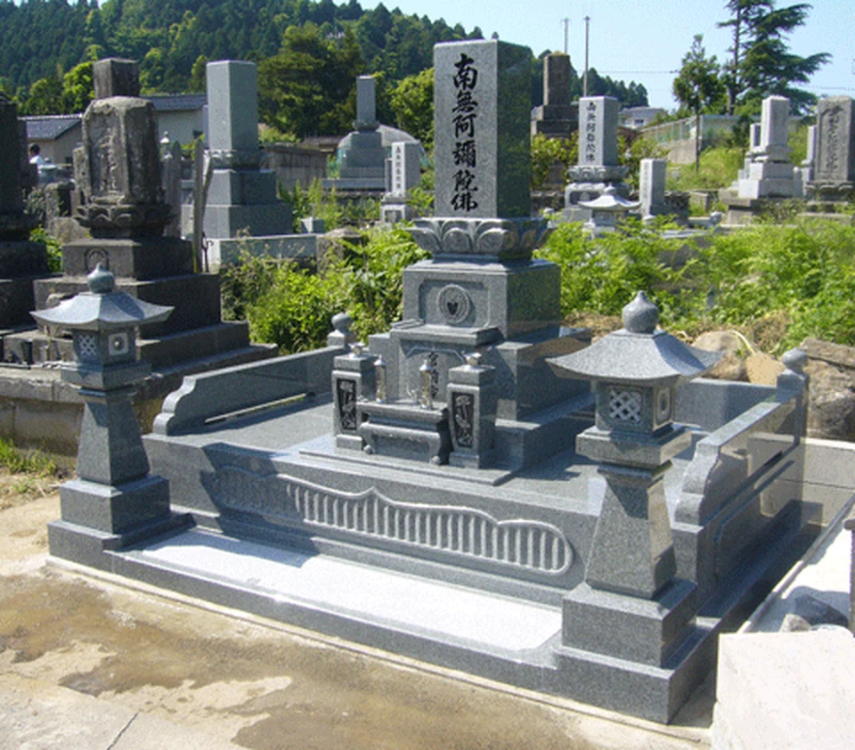
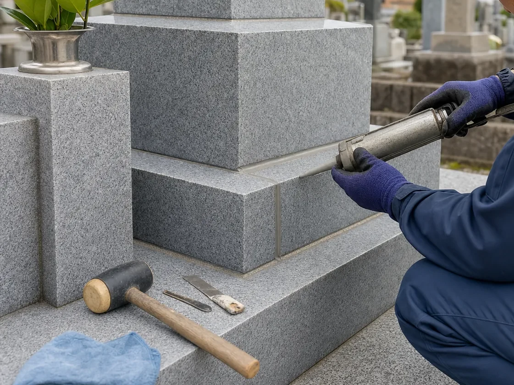
REPAIR & ORGANIZE
お墓を直す・整理する
今あるお墓を、これからも守りつづけるために。
年月が経ったお墓は、汚れや欠け、目地の劣化、金具の傷みなどが出ることがあります。
お墓のリフォームやクリーニング、追加彫り、墓じまい、お墓の移転など、今あるお墓をどうすればよいか迷っている段階でもご相談ください。
お墓を直す・整理するページへ→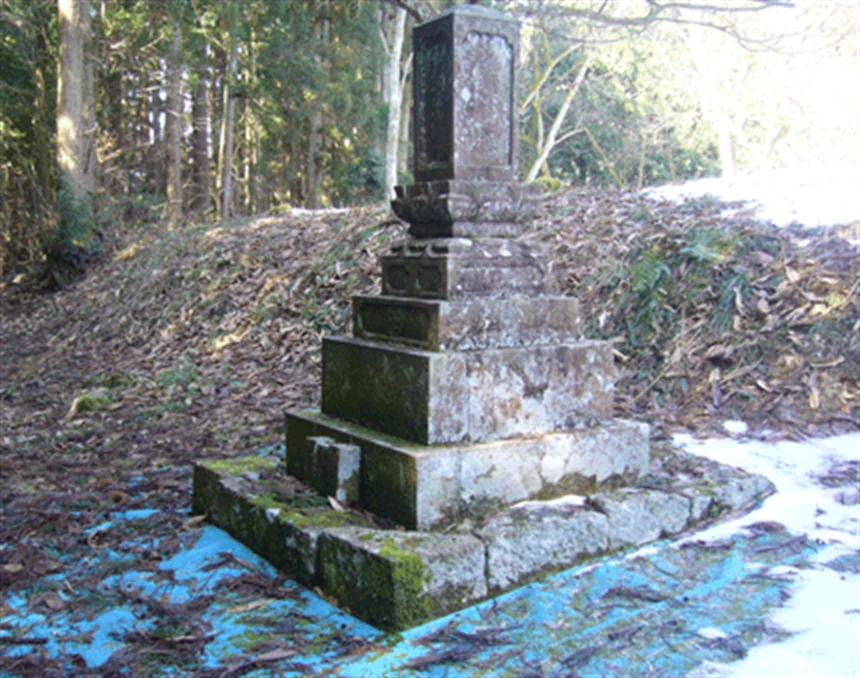
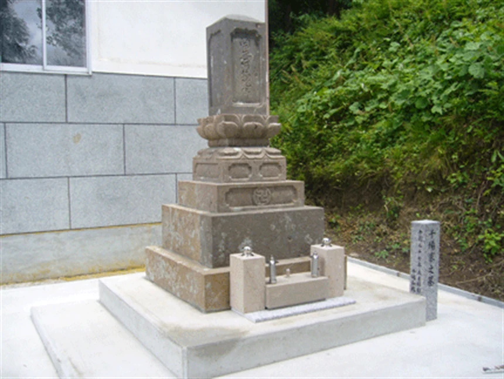
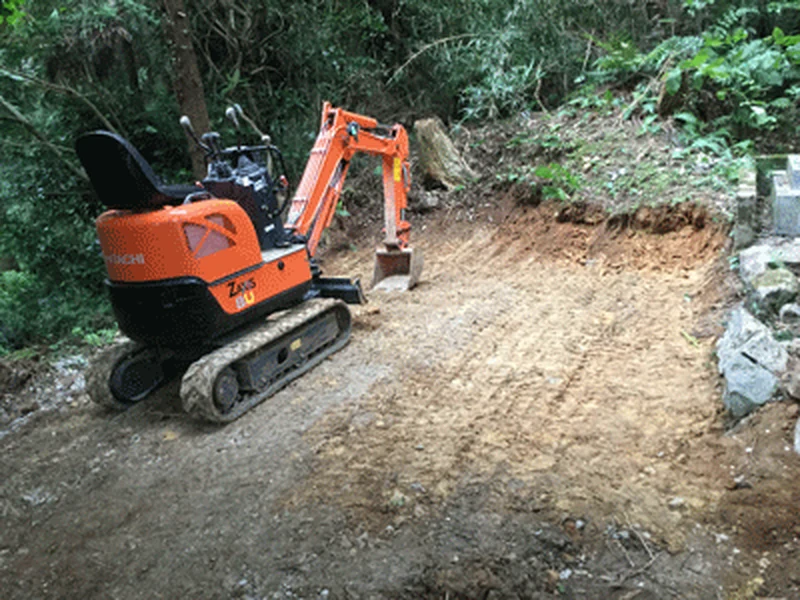
WORKS
施工事例
これまでにお手伝いしてきた仕事の一部をご紹介します。
新しくお墓を建てることから、今あるお墓の建替えやリフォーム、墓じまい、洗浄や追加彫りまで。番谷石材店がこれまでに携わってきた仕事をご覧いただけます。
施工事例ページへ→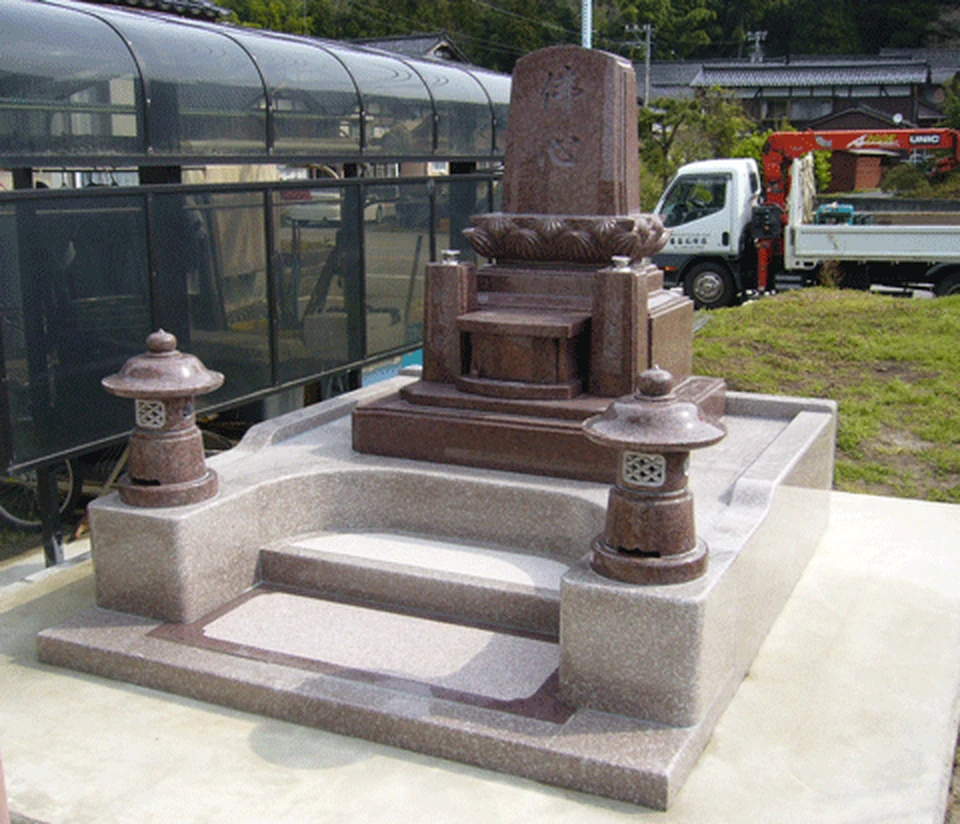
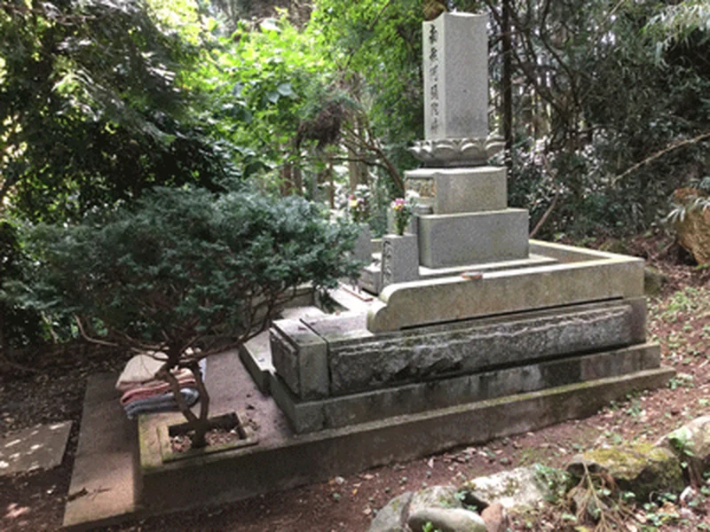
KNOWLEDGE
お墓の知識
お墓について、よく聞かれること。
お墓を建てる時期、石の選び方、文字の色、お墓掃除の注意点など、実際によく聞かれる内容をまとめています。
初めてお墓について考える方にも分かりやすいよう、基本的なことからご紹介しています。
お墓の知識ページへ→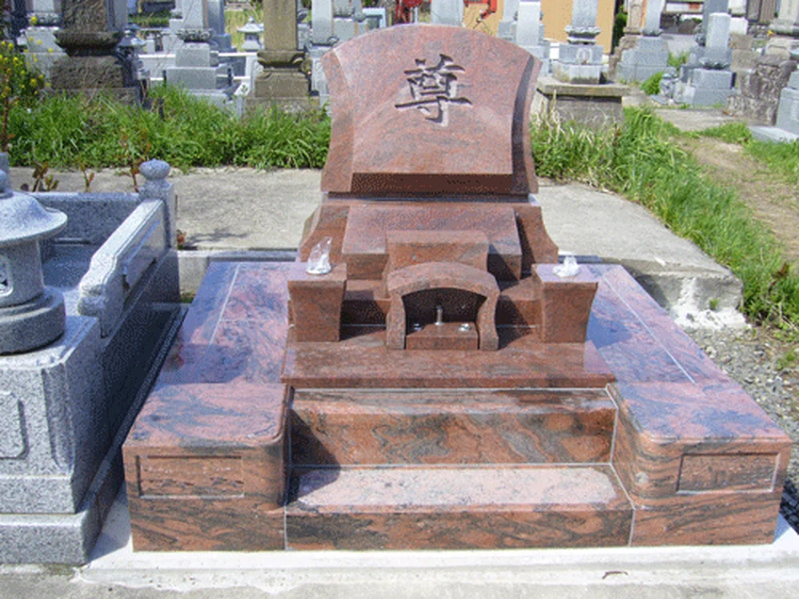
CONTACT & SHOP
お問い合わせ・会社案内
お墓や石のこと、まずはお話をお聞かせください。
「どこに相談すればよいか分からない」という段階でも大丈夫です。
お墓を建てること、今あるお墓を直すこと、墓じまい、追加彫り、石に関するご相談など、まずは現在の状況をお聞かせください。